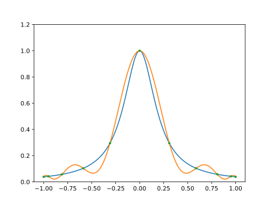
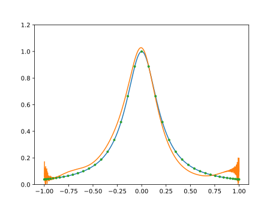

Numerical methods challenge: Day 11 - Vandermonde matrices
During October (2017) I will write a program per day for some well-known numerical methods in both Python and Julia. It is intended to be an exercise then don't expect the code to be good enough for real use. Also, I should mention that I have almost no experience with Julia, so it probably won't be idiomatic Julia but more Python-like Julia.
Lagrange interpolation: Inverting Vandermonde matrix
Today we have Lagrange interpolation, yet one more time. I will have a different approach to compute the interpolation; I will form the Vandermonde matrix \(V\) and solve the system
where \(\mathbf{c}\) is the vector of coefficients and \(I\) is the identity matrix. This method, and the previous one are not stable and should not be used for the computation of higher order interpolants, even for optimally chosed sampling. It will start failing around 40 points. A better approach is to use the barycentric form of the interpolation.
In the example below we use Chebyshev nodes. The nodes are given by
where \(n\) is the degree of the polynomial.
Following are the codes.
Python
from __future__ import division, print_function import numpy as np import matplotlib.pyplot as plt def vander_mat(x): n = len(x) van = np.zeros((n, n)) power = np.array(range(n)) for row in range(n): van[row, :] = x[row]**power return van def inter_coef(x): vand_mat = vander_mat(x) coef = np.linalg.solve(vand_mat, np.eye(len(x))) return coef def compute_interp(x, f, x_eval): n = len(x) coef = inter_coef(x) f_eval = np.zeros_like(x_eval) for row in range(n): for col in range(n): f_eval += coef[row, col]*x_eval**row*f[col] return f_eval n = 11 x = -np.cos(np.linspace(0, np.pi, n)) f = 1/(1 + 25*x**2) x_eval = np.linspace(-1, 1, 500) interp_f = compute_interp(x, f, x_eval) plt.figure() plt.plot(x_eval, 1/(1 + 25*x_eval**2)) plt.plot(x_eval, interp_f) plt.plot(x, f, ".") plt.ylim(0, 1.2) plt.show()
Julia
using PyPlot function vander_mat(x) n = length(x) van = zeros(n, n) power = 0:n-1 for row = 1:n van[row, :] = x[row].^power end return van end function inter_coef(x) vand_mat = vander_mat(x) coef = vand_mat \ eye(length(x)) return coef end function compute_interp(x, f, x_eval) n = length(x) coef = inter_coef(x) f_eval = zeros(x_eval) for row = 1:n for col = 1:n f_eval += coef[row, col]*x_eval.^(row - 1)*f[col] end end return f_eval end n = 11 x = - cos.(linspace(0, pi, n)) f = 1./(1 + 25*x.^2) x_eval = linspace(-1, 1, 500) interp_f = compute_interp(x, f, x_eval) plot(x_eval, 1./(1 + 25*x_eval.^2)) plot(x_eval, interp_f) plot(x, f, ".") ylim(0, 1.2) show()
In both cases the result is the plot below.

And, if we try with a high \(n\), say \(n=45\), we can see the problems.

Comparison Python/Julia
Regarding number of lines we have: 41 in Python and 44 in Julia. The comparison
in execution time is done with %%timeit magic command in IPython and
@benchmark in Julia.
For Python:
%%timeit -n 100 n = 11 x = -np.cos(np.linspace(0, np.pi, n)) f = 1/(1 + 25*x**2) x_eval = np.linspace(-1, 1, 500) interp_f = compute_interp(x, f, x_eval)
with result
For Julia:
function bench() x = - cos.(linspace(0, pi, n)) f = 1./(1 + 25*x.^2) x_eval = linspace(-1, 1, 500) interp_f = compute_interp(x, f, x_eval) return nothing end @benchmark bench()
with result
BenchmarkTools.Trial: memory estimate: 32.23 MiB allocs estimate: 8277 -------------- minimum time: 114.282 ms (1.50% GC) median time: 122.061 ms (1.46% GC) mean time: 129.733 ms (1.90% GC) maximum time: 163.716 ms (1.98% GC) -------------- samples: 39 evals/sample: 1
In this case, we can say that the Python code is roughly 16 times faster than the Julia one.
Comments
Comments powered by Disqus